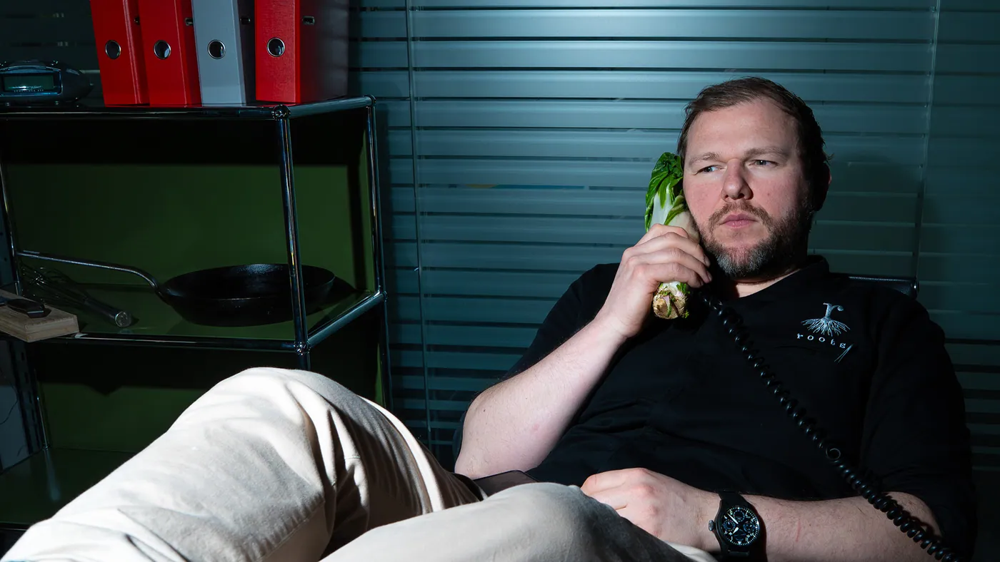

«roots» x Basel Social Club – ein einmaliges Dinner-Erlebnis während der Art Basel
Für eine exklusive Kooperation mit dem Basel Social Club verlagert das Restaurant seinen Betrieb temporär in ein leerstehendes Bürogebäude im Zentrum von Basel. Dort entsteht das Format «Dinner Meeting – a culinary Office Affair by Basel Social Club & «roots» Basel».
Vom 15. bis 19. Juni 2026 präsentiert «roots», unter der Leitung von Küchenchef Pascal Steffen, ein eigens entwickeltes kulinarisches Konzept. Das Dinner findet als Seated Fine-Dining-Erlebnis in einem eigens gestalteten Private Dining Room statt. Serviert wird ein 4-Gang-Menü, begleitet von einer passenden Getränkebegleitung.